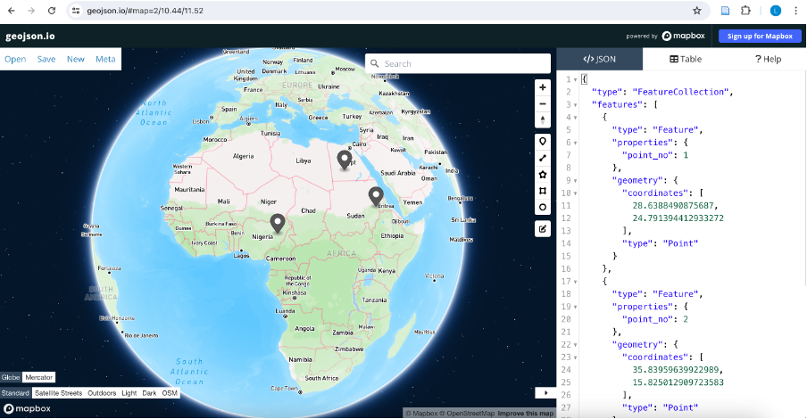

Web maps
Learning basic web progamming and web map development using MapLibre GL
Lindsey Smith
May, 2024
Web maps are great for allowing users to explore and interact with spatial data on their own terms. They are openly accessible, eliminating the need for specialised software during development and GIS expertise for interpretation.
In order to build an interactive web map, it’s helpful to learn some basic web programming skills. To construct the client-side architecture (the interface the user interacts with), we can use three coding languages:
- HTML
- CSS
- JavaScript
A text editor serves as an ideal development environment – I like to use Visual Studio Code for its auto-completion features.
Within Visual Studio Code, set up the following three files in Visual Studio Code a new empty folder.

HTML
HTML acts as the backbone of our webpage, relying on tags to structure the elements that are included on the page.
Helpfully, Visual Studio Code offers shortcuts and prompts to streamline our coding. For example, typing
“!” and hitting enter generates a basic HTML boilerplate. The boilerplate code includes key tags
<head> which holds metadata and links to external resources, and
<body> where the main content resides.
<!DOCTYPE html>
<html lang="en">
<head>
<meta charset="UTF-8">
<meta name="viewport" content="width=device-width, initial-scale=1.0">
<title>Document</title>
<link rel="stylesheet" href="style.css">
</head>
<body>
<script src="script.js"></script>
</body>
</html>
Let’s add some simple tags to get started. Within the <body>, add a heading, text,
and button. For an understanding of the range of tags that are available, take time to explore
alternative options on W3Schools. We’ll be using a div tag, for example, as a container for our map.
<h1>This is a heading</h1>
<p>This is a paragraph.</p>
<button id = "my-button">Click me!</button>
CSS
CSS is responsible for adding styling to our webpage and controlling layout. For example, we can apply colours, positioning, fonts etc to our HTML elements using CSS. Again, W3Schools is a great resource to get you started and provide you with an idea of the different properties you can update.
body {
background-color: lightblue;
}
h1 {
color: white;
text-align: center;
}
p {
font-family: verdana;
font-size: 20px;
}
To apply styling to HTML elements, we use selectors (the value preceding the curly braces) in CSS rules.
Setting an element name (e.g., p) as a selector will apply styling to all <p>
elements across our webpage. However, there are scenarios where we may want to target a specific element
uniquely for styling purposes. In such cases, we can assign the element an id in HTLM (e.g.,
<p id = "unique-para">) and use a # adjacent to our selector in CSS.
Similarly, if we have a multiple elements requiring common styling, we can add a class to the HTML
elements (e.g., <p class = "para-class">) and then refer to the class using dot
notation in CSS.
#unique-para {
font-weight: bold;
}
.para-class {
text-align: center;
}
JavaScript
JavaScript is what brings our web page to life. It allows us to build in interactivity, for example, by writing functions that are fired following an event in the browser (e.g., a page load or user mouse click).
For today, we’ll just get started with some basics, although I recommend the Codecademy course Learn JavaScript to help deepen your knowledge.
// Variables
const placename = "Toronto"; // Value cannot be reassigned
let year = 2024; //Value can be reassigned if needed
// Arrays
let coords = [-79, 43]
// If statements
if (year > 2020) {
console.log("Year is greater than 2020");
}
// For loops
for (let i = 0; i < 5; i++) { // 3 args: Initial value i, condition to be met for iteration of loop, increment value i
console.log("Loop " + (i + 1));
}
// Functions
function message(home) {
return "I live in " + home;
}
let mytext = message(placename);
console.log(mytext);
Open the Console via Dev Tools to view the console.log() output. This is a helpful way to test and de-bug!
Event Handlers
Event handlers are functions that are executed in response to events occurring in the browser. For example, the code below shows how a click of a button by the user triggers an event which in turn evokes a function to update text for HTML element <p id = "update-text">. To build the event handler, we first make reference to the HTML elements using the getElementById method, next we add an event listener to the button’s click event and lastly, we include a callback function () => {} for the desired action.
const myButton = document.getElementById("my-button");
const updateText = document.getElementById("update-text");
let clickCount = 0;
myButton.addEventListener("click", () => {
clickCount++;
updateText.textContent = "You clicked me! " + clickCount + " times";
});
Web mapping API: MapLibre
Ok, so now we know the basics of building a web page, let’s have a go at developing a web map!
There are a range of different mapping APIs that can help us with this (e.g., Leaflet, OpenLayers, CARTO Maps, D3, and MapLibre). APIs are essentially libraries that have predefined functions to help us do cool things like add our own data layers, listen out for HTML or map events, and respond by filtering data, showing pop-ups etc. Often, working with an API is a case of identifying existing functionality within documentation and adding in your own parameters to suit your data and needs.
We will use MapLibre GL which is an opensource alternative to Mapbox offering a comparable range of methods and classes. I encourage you to explore the documentation – the API pages, particularly the methods for the map object, and the examples can be super helpful.
To get started, update the code in each of your files:
1. HTML
- Add CDN links to the MapLibre GL JS package in the head tag
- Add a div tag with ID in the body tag– this will be the container for our map
<head>
<meta charset="UTF-8">
<meta name="viewport" content="width=device-width, initial-scale=1.0">
<title>My webpmap</title>
<link rel="stylesheet" href="style.css">
<script src='https://unpkg.com/maplibre-gl@latest/dist/maplibre-gl.js'></script>
<link href='https://unpkg.com/maplibre-gl@latest/dist/maplibre-gl.css' rel='stylesheet' />
</head>
<body>
<div id = "map"></div>
<script src="script.js"></script>
</body>
2. CSS
- Add style properties to map ID selector to position map so that it fills the browser window
#map {
position: absolute;
top: 0;
bottom: 0;
width: 100%;
}
3. JavaScript
- Initialise the map object
const map = new maplibregl.Map({
container: 'map', // container id
style: 'https://demotiles.maplibre.org/style.json', // style URL
center: [0, 0], // starting position [lng, lat]
zoom: 1 // starting zoom
});
That's a good starting point but ideally we want our basemap to suit our map scale, data, and purpose. I created an account with maptiler and used one of their basemaps - you're welcome to use this and my API key for this exercise but it looks like maptiler follows a similar licensed format to Mapbox. I believe it's possible to create your own JSON style file and serve as maptiles for your basemap without relying on a licensed service but I'm still looking into this!
const map = new maplibregl.Map({
container: 'map', // container id
style: 'https://api.maptiler.com/maps/basic-v2/style.json?key=ZZmXLp70IeXZpwoYYAmO', // style URL
center: [-105, 58], // starting position [lng, lat]
zoom: 3 // starting zoom
});
Let's start making use of the maplibre API.
Add map controls
map.addControl(new maplibregl.NavigationControl());
Add a data layer
- GeoJSON files work well for web development and we can easily access attribute and geometry properties. If you're not familiar with GeoJSON files, have a go at creating your own using https://geojson.io/ to plot some different geometry types and add data properties and values. Notice how the text structuring the file updates. You can also create GeoJSON files by exporting them using GIS desktop software such as QGIS. Just be mindful that we don't want our files to be too large as this will limit the time it takes for our web page to load. If you have a GeoJSON with a large number of nodes, you may find tools such as mapshaper helpful for simplifying your geometries and reducing file size.
 - First we want to use the addSource method to access our data. Here, we will need a url to fetch our GeoJSON. Having a GeoJSON stored in an online GitHub repository is a good way to do this.
- Once we have our data source, we can use the addLayer method to visualize our data. Here, there are a range of arguments we can include. We must have an id and source, and our type must be appropriate for our geometry (e.g., fill = polygon, point = circle). Additional paint and layout properties allow us to customize the appearance of our data. The maplibre layer style spec details the possible arguments.
- Similar to our button event handler above, I've added these methods inside a map load event handler so that they are fired after the map finished loading.
map.on('load', () => {
map.addSource('canada-provterr', {
type: 'geojson',
data: 'https://raw.githubusercontent.com/smith-lg/ggr472-wk6-demo/main/data/can-provterr.geojson', //Link to raw github files when in development stage. Update to pages on deployment
'generateId': true //Create a unique ID for each feature
});
map.addLayer({
'id': 'provterr-fill',
'type': 'fill',
'source': 'canada-provterr',
'paint': {
'fill-color': '#627BC1',
'fill-opacity': 0.5,
'fill-outline-color': 'white'
},
});
});
Add interactivity
- Using event handlers, we can add functionality to our map. Below, we listen out for a click in our data layer on the map and fire a response. For example, we can add a message to the console or add a pop-up window in the map.
- You can get pretty creative with interactivity. Start to think about adding HTML elements on top of your map and using buttons, drop downs etc to update the map in some way. For example, you may like to change the visibility of a layer (e.g., with setLayoutProperty method) or filter the data shown (e.g., with setFilter method).
//Simple click event
map.on('click', 'provterr-fill', (e) => {
//console.log(e); //e is the event info triggered and is passed to the function as a parameter (e)
let provname = e.features[0].properties.PRENAME;
console.log(provname);
});
//Add pop up event
map.on('click', 'provterr-fill', (e) => {
new maplibregl.Popup() // Declare new popup object on each click
.setLngLat(e.lngLat) // Use method to set coordinates of popup based on mouse click location
.setHTML("Province/Territory: " + e.features[0].properties.PRENAME + "
" +
"Population: " + e.features[0].properties.POP2021) // Use click event properties to write text for popup
.addTo(map); // Show popup on map
});